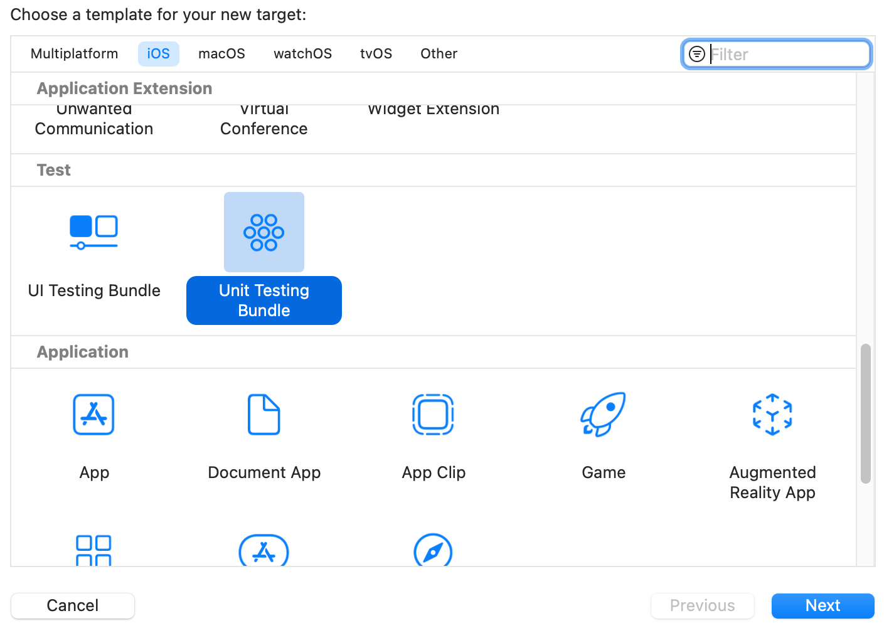
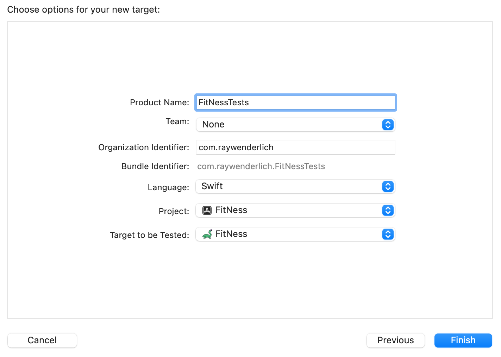
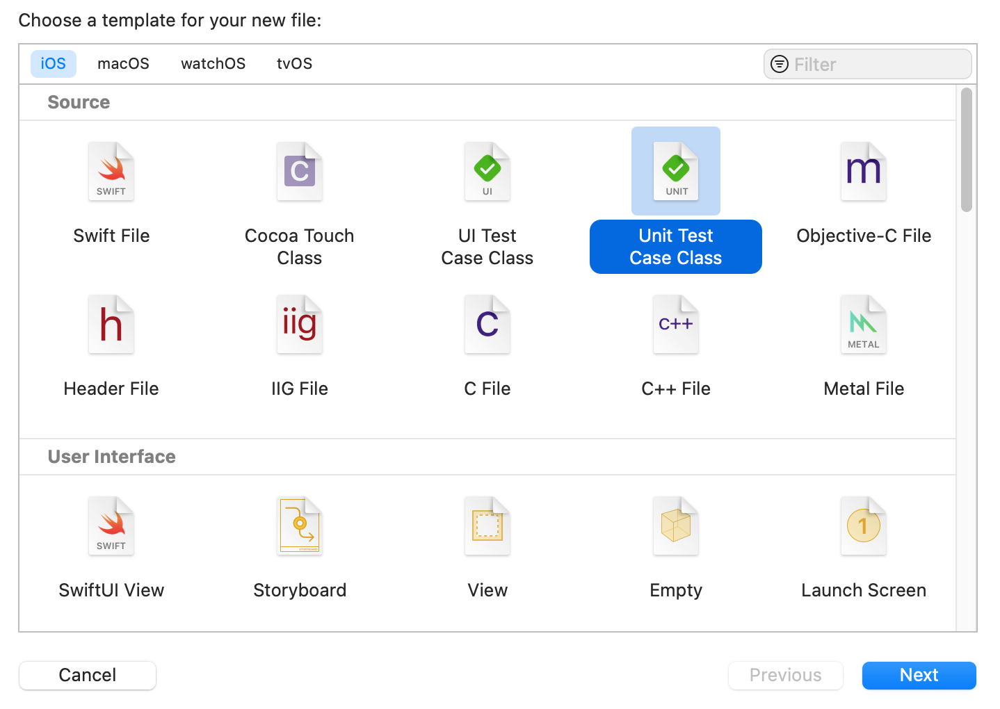
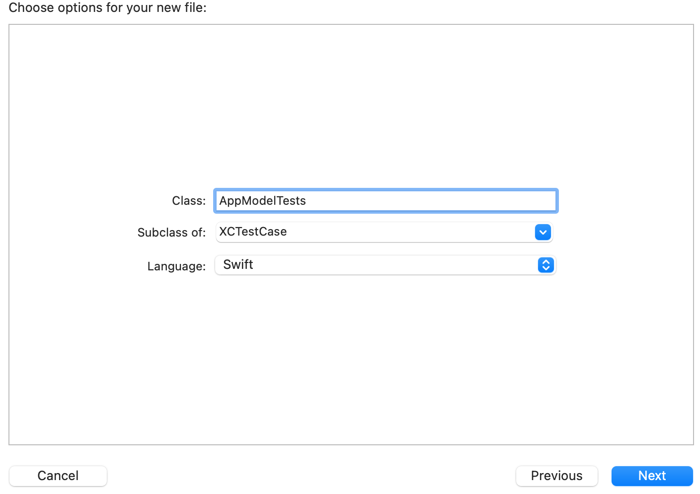
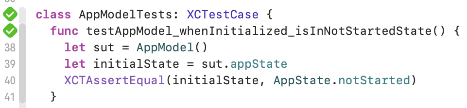

3: TDD应用程序的设置¶
现在，你应该已经对测试驱动开发（TDD）有所了解，或者至少是好奇。遵循TDD方法可以帮助您编写干净、简明和正确的代码。本章将指导您了解其基本原理，并通过创建一个带有几个测试的测试目标，让您感受到Xcode测试是如何工作的。你将在学习TDD的关键概念的同时完成这些工作。
在本章结束时，您将能够：
- 创建一个测试目标并运行单元测试。
- 编写验证数据和状态的单元测试。
关于FitNess应用程序¶
在本章中，你将建立一个有趣的步数跟踪应用程序：FitNess。FitNess是基于尼斯湖锻炼的首屈一指的健身教练应用程序。用户必须跑过、游过或爬过尼斯这个健身怪物。该应用程序旨在通过让用户超越尼斯湖来激励他们运动。如果他们失败了，Nessie会吃掉他们的头像。
从第三章的启动项目开始。这是一个外壳应用。它带有一些已经连接好的东西，以节省你的一些繁忙的工作。由于目标是通过编写测试来引导开发，所以它主要是光秃秃的。
建立并运行。你会看到这个应用程序什么都不做。
你的第一个测试¶
第一件事：没有测试目标，你就不能运行任何测试。测试目标是一个包含测试代码的二进制文件，在测试阶段执行。
虽然它与应用程序一起构建，但它不包括在应用程序捆绑中，这意味着你的测试代码可以包含不发送给用户的代码。然而，仅仅因为你的用户不会看到这些代码，并不意味着你可以写低质量的代码。
TDD哲学将测试视为一流的代码，这意味着它们应该在可读性、命名、错误处理和编码惯例方面符合与你的生产代码相同的标准。
添加一个测试目标¶
首先，创建一个测试目标。在项目导航器中选择FitNess，显示项目编辑器。点击目标列表底部的+按钮，添加一个新的目标。

向下滚动到测试部分，选择单元测试包。点击下一步。

你是否注意到另一个捆绑包--UI测试捆绑包？UI测试使用自动化脚本来验证视图和应用程序状态。这种类型的测试对于坚持TDD方法论来说并不是必须的，也不在本书的范围之内。
在下一个屏幕上，仔细检查产品名称是FitNessTests，语言是Swift，要测试的目标是FitNess。然后点击完成。

瞧！你现在有了一个FitNessTests目标。你现在有一个FitNessTests目标。Xcode还在项目导航器中添加了一个FitNessTests组，其中有FitNessTest.swift和一个目标的Info.plist。
决定要测试什么¶
单元测试目标模板带有一个单元测试类：FitNessTests。讽刺的是，它实际上并没有测试任何东西。删除FitNessTests.swift。
现在，由于没有业务逻辑，该应用程序什么都不做。只有一个按钮，而用户期望点击"开始"就能启动活动。因此，你应该从... 开始。
TDD过程要求首先写一个测试，这意味着确定最小的功能单元。这个单元是开始的地方。最小的东西，做什么的。
应用程序模型目录包含一个AppState枚举，毫不奇怪，它代表了应用程序的不同潜在状态。AppModel类包含了应用程序的当前状态。
启动应用程序的最低功能是让"开始"按钮将应用程序放入一个已启动或正在进行的状态。有两个语句支持这个目标：
- 应用程序应该在
.notStarted中启动，以便让用户界面渲染欢迎信息。 - 当用户点击
Start时，应用程序应进入.inProgressed，以跟踪用户活动并显示更新。
这些语句实际上是断言，是你用来定义测试用例的。
添加一个测试类¶
右键单击项目导航器中的FitNessTests。选择新文件。在iOS标签中，选择单元测试用例类，然后点击下一步。

命名AppModelTests这个类。一个好的命名规则是采用你要测试的文件或类的名称，并加上后缀。测试。在这种情况下，你要为AppModel编写测试。点击"下一步"。

确保该组是FitNessTests，并且只选中FitNessTests目标。点击创建。如果Xcode要求创建一个Objective-C的桥接头，点击Don't Create。这个项目中没有Objective-C。

现在你有一个新的测试类，可以开始添加测试用例。删除模板方法testExample()和testPerformanceExample()。暂时忽略setUpWithError()和tearDownWithError()。
红色-绿色-反应器¶
TDD的游戏名称是红色、绿色、重构。为了以这种方式迭代编写测试，你：
- 写一个失败的测试（红色）。
- 编写最小量的代码以使测试通过（绿色）。
- 根据需要清理测试和代码（重构）。
- 重复这个过程，直到你覆盖所有的逻辑案例。
编写一个红色测试¶
将你的第一个无法编译的测试添加到类中：
func testAppModel_whenInitialized_isInNotStartedState() {
let sut = AppModel()
let initialState = sut.appState
XCTAssertEqual(initialState, AppState.notStarted)
}
这个方法创建了一个应用程序模型，并获得其appState。测试的第三行执行断言，即状态与预期值相匹配--稍后会有更多的内容。
接下来，运行该测试。
Xcode提供了几种方法来运行测试：
- 点击行号栏中单个测试旁边的钻石。这个方法只是运行该测试。

- 点击类定义旁边的钻石，运行文件中的所有测试。
- 在测试导航器中点击测试或测试类右边的
Play。这个过程运行一个单独的测试，整个测试文件或测试目标中的所有测试。 - 使用
Product ▸ Test菜单动作，或Command + U，来运行方案中的所有测试。现在，有一个测试目标，所以它只会运行FitNessTests中的所有测试。 - 按
Control + Option + Command + U。如果编辑器的光标在一个测试功能内，这个方法就会运行测试功能，如果光标在一个测试文件内但在一个特定的测试功能外，就会运行整个测试文件。
这是运行一个测试的很多方法! 选择你喜欢的任何一种方式来运行你的一个测试。
在测试执行之前，你会收到两个编译错误，这意味着这是一个失败的测试 祝贺你! 一个失败的测试是TDD的第一步! 记住，在这个阶段，红色不仅仅是好的，而是必要的。如果测试在没有写任何代码的情况下通过，那么它就不是一个有价值的测试。
让测试变成绿色¶
这个测试的第一个问题是测试代码不知道AppModel是什么东西。在文件的顶部添加这个语句：
import FitNess
在Xcode中，虽然应用程序目标不是框架，但它们是模块，而测试目标可以像框架一样导入它们。像框架一样，你必须在每个Swift文件中导入它们，这样编译器就能知道应用程序包含什么。
如果编译错误无法在范围内找到AppModel不能自行解决，你可以通过Product ▸ Build For ▸ Testing菜单或默认的键盘快捷键Shift + Command + U，让 Xcode重新构建测试目标。
你还没有完成对编译器错误的修复。现在，编译器会抱怨AppModel类型的值没有成员appState。
打开AppModel.swift，在类的正上方init()添加以下变量：
public var appState: AppState = .notStarted
再次运行该测试。你会在测试旁边得到一个绿色复选标记，因为它通过了。
注意你写的唯一的应用程序代码是为了使这个测试通过。

祝贺你，你现在有了一个绿色的测试! 这个测试是微不足道的：你在测试一个枚举变量的默认状态，作为初始化器的结果。这意味着，在这种情况下，没有什么需要重构的。你已经完成了!
编写一个更有趣的测试¶
前面的测试断言应用程序以未启动状态启动。接下来，断言应用程序可以从未启动状态转为进行中状态。
将下面的测试添加到你的类的结尾处，在结尾的括号前：
func testAppModel_whenStarted_isInInProgressState() {
// 1 given app in not started
let sut = AppModel()
// 2 when started
sut.start()
// 3 then it is in inProgress
let observedState = sut.appState
XCTAssertEqual(observedState, .inProgress)
}
你可以把这个测试分成三个部分：
- 第一行创建一个
AppModel。前面的测试确保该模型初始化为.notStarted。 - 第二行调用一个尚未创建的启动方法。
- 最后两行验证状态应该等于
.inProgress。
运行测试。再一次，你有一个不能编译的红色测试。接下来，你将修复编译器错误。
打开AppModel.swift，在init()下面添加以下方法：
public func start() {
}
现在，该应用程序应该可以编译了。运行测试。

测试失败了! 很明显，它失败是因为start()没有代码。给start()添加最小的代码，这样测试就通过了：
appState = .inProgress
再次运行测试。测试通过!
Note
一个空的start()不能通过测试，这是直接的逻辑。TDD是关于纪律的，在学习的时候严格遵守流程是很好的做法。随着经验的增加，在得到测试编译后，跳过字面的构建和测试步骤是可以的。但是，你不能跳过编写最低数量的代码，以便测试通过。这是TDD过程中必不可少的，也是确保充分覆盖的原因。
测试命名法¶
这些测试遵循一些TDD命名法和命名的最佳实践。再看一下第二个测试，逐行看：
func testAppModel_whenStarted_isInProgressState() {
测试函数的名称应该描述测试。测试名称会显示在测试导航器和测试日志中。对于在持续集成设备中运行的大型测试套件，你只需看一下测试失败，就可以看到问题所在。避免用非描述性的名字创建测试，如test1和test2。
这里使用的命名方案最多有四个部分：
i. 所有测试必须以test开头。
ii. AppModel这表示一个AppModel是被测系统(sut)。
iii. whenStarted表示条件或状态变化，是测试的催化剂。
iv. isInProgressState是关于何时发生后被测系统的状态的断言。
这种命名惯例也有助于使测试代码集中在一个特定的条件上。任何不能从测试名称中自然流露的代码都属于另一个测试。
let sut = AppModel()
在这里，你通过命名被测系统为sut，使其明确。这个测试是在AppModelTests的测试用例子类中，是对AppModel的一个测试。它可能有点多余，但它很好，很明确。
sut.start()
这就是要测试的行为。在这种情况下，测试包括当你调用start()时会发生什么。
let observedState = sut.appState
在这里，你定义一个持有你在执行应用程序代码时观察到的值的属性。
XCTAssertEqual(observedSate, .inProgress)
最后一部分是关于sut启动时发生什么的断言。所述逻辑断言在XCTest中直接对应于XCTAssert函数。
你可以把一个测试方法分为given/when/then：
- 一个测试的第一部分是
given的东西。这就是系统的初始状态。 - 第二部分是
when，也就是作用于系统的动作、事件或状态变化。 - 第三部分，或称
then，是测试when之后的预期状态。
TDD是一个过程，而不是一个命名惯例。本书使用这里列出的惯例，但你仍然可以使用你喜欢的任何命名惯例来遵循TDD。重要的是你要写出失败的测试，添加使测试通过的代码，然后重构和重复，直到应用程序完成。
XCTestCase子类的结构¶
XCTest是由XUnit衍生出来的测试框架家族中的一员。像许多优秀的面向对象的东西一样，XUnit来自Smalltalk，在那里它是Unit。它是一个运行单元测试的架构。X是编程语言的代名词。例如，在Java中，它是JUnit，而在Objective-C中，它是OCUnit。在Swift中，它只是XCTest。
在XUnit中，测试是名称以test开头的方法，是测试案例类的一部分。你可以将测试用例分组为一个测试套件。测试运行器是一个程序，它知道如何在套件中找到测试案例，运行它们并收集和显示结果。它是Xcode的测试运行器，当你运行一个方案的测试阶段时执行。
每个测试案例类都有setUpWithError()和tearDownWithError()，用于在每个测试方法运行前后设置全局和类的状态。不像其他XUnit实现，XCTest没有生命周期方法，对整个测试类或测试目标只运行一次。
这些方法是必不可少的，因为有几个微妙但极其重要的问题：
- 你在测试执行之外管理
XCTestCase子类的生命周期，任何类级的状态在测试方法之间持续存在。 - 因为没有明确的定义，你不能依赖测试类和测试方法的运行顺序。
因此，使用setUpWithError()和tearDownWithError()来清理并确保状态在每次测试前处于已知位置是很重要的。
设置一个测试¶
两个测试都需要一个AppModel()来测试。对于测试案例来说，使用一个普通的sut对象是很常见的。
在AppModelTests.swift中，在类的顶部添加以下变量：
var sut: AppModel!
这个变量为AppModel预留存储空间，以便在测试中使用。在这种情况下，它被强制解包，因为你不能访问类的初始化器。相反，你必须在以后设置变量，例如在setUpWithError()中设置。
接下来，将setUpWithError()更新为：
override func setUpWithError() throws {
try super.setUpWithError()
sut = AppModel()
}
最后，在testAppModel_whenInitialized_isInNotStartedState()和testAppModel_whenStarted_isInProgressState()中，都删除：
let sut = AppModel()
建立并测试。测试仍然通过。
第二个测试修改了sut的appState。如果没有设置代码，测试顺序可能很重要，因为第一个测试断定了sut的初始状态。但是现在，顺序并不重要，因为sut在每个测试中都被重新实例化了。
拆解一个测试¶
XCTestCases的一个相关问题是，在所有测试完成之前，它不会被取消初始化。这意味着在运行后必须清理测试的状态，以控制内存的使用，清理文件系统或以其他方式将事情恢复到你发现的方式。
更新tearDownWithError()：
override func tearDownWithError() throws {
sut = nil
try super.tearDownWithError()
}
到目前为止，这是一个相当简单的测试案例，唯一的持久性状态是在sut中，所以在tearDown中清除它是很好的做法。它有助于确保你在未来添加的任何新的全局行为不会影响以前的测试。
你的下一组测试¶
你添加了一点应用程序的逻辑。但现在还没有任何用户可见的功能。你需要连接Start来改变应用程序的状态并将其反映给用户。
暂停一下! 这是测试驱动的开发，这意味着先写测试。
由于StepCountController包含主屏幕的逻辑，在FitNessTests目标中创建一个名为StepCountControllerTests的新单元测试案例类。
测试目标组织¶
花点时间考虑一下测试目标的组织。当你在构建应用程序时继续添加测试用例，它们会变得很难在一个无组织的列表中找到和维护。记住，单元测试是一等一的代码，应该和应用程序代码有同样的审查水平。这意味着要把它们组织起来。
在本书中，你将使用以下组织方式：
Test Target
⌊ Cases
⌊ Group 1
⌊ Tests 1
⌊ Tests 2
⌊ Group 2
⌊ Tests
⌊ Mocks
⌊ Helper Classes
⌊ Helper Extensions
Cases：测试用例的组。这些案例是以平行于应用程序代码的结构组织的，使其易于在应用程序类和其测试之间导航。Mocks：用于替代功能代码的代码，让你把功能和实现分开。例如，开发人员通常模拟网络请求。你将在后面的章节中构建这些代码。Helper classes和extensions：用于编写额外的代码，使测试代码更容易编写，但它不直接测试或模拟功能。
把已经在目标中的两个类放在一个名为Cases的组中。接下来，把AppModelTests.swift放在App Model组中。然后把
StepCountControllerTests.swift放在UI层组中。当这一切完成后，你的目标结构将看起来像这样：

当你添加新的测试时，把它们组织在一组中。
使用@testable导入¶
打开StepCountControllerTests.swift。
删除testExample()和testPerformanceExample()的sutbs。然后删除setUpWithError()和tearDownWithError()中的注释。接下来，在setUpWithError()上面添加以下类变量：
var sut: StepCountController!
现在构建测试类。你会看到一个错误，在范围内找不到类型StepCountController，因为这个类被指定为内部，因为它没有明确定义访问控制。
有两种方法可以解决这个错误。第一种是将StepCountController声明为public，使该类在FitNess模块之外可用，并可由测试类使用。然而，这将违反SOLID原则，使视图在应用程序之外可见。
幸运的是，Xcode提供了一种方法，通过@testable属性将数据类型暴露给测试，而不使其可用于一般用途。
在文件的顶部，在import XCTest下添加以下内容：
@testable import FitNess
这段代码使开放的、公共的和内部的符号对测试用例可用。注意，这个属性只在测试目标中可用，在应用程序或框架代码中不起作用。现在，测试可以成功构建。
接下来，更新setUpWithError()和tearDownWithError()，如下所示：
override func setUpWithError() throws {
try super.setUpWithError()
sut = StepCountController()
}
override func tearDownWithError() throws {
sut = nil
try super.tearDownWithError()
}
测试状态变化¶
现在，有趣的部分来了! 当用户点击Start时：有两件事需要检查。应用程序的状态是否更新，用户界面是否更新。依次检查每一项。
在tearDownWithError()下面添加以下测试方法：
func testController_whenStartTapped_appIsInProgress() {
// when
sut.startStopPause(nil)
// then
let state = AppModel.instance.appState
XCTAssertEqual(state, AppState.inProgress)
}
该方法测试当你调用startStopPause()时，应用程序的状态是否在进行中。
构建和测试。你会得到一个测试失败，因为你还没有实现startStopPause。记住，此时的测试失败是好的!
打开StepCountController.swift，给startStopPause()添加以下代码：
AppModel.instance.start()
建立并再次测试。现在测试通过了!
测试UI更新¶
使用UI自动化进行的UI测试是一种不同类型的测试，不在本书的讨论范围之内。然而，有很多UI方面可以，而且应该被单元测试。SwiftUI的声明性意味着一个视图的内部结构是故意难以访问的。UI自动化使这项任务变得更加容易，但你也可以通过将状态控制逻辑与视图层次结构分开来编写有价值的单元测试。
编写测试¶
在StepCountControllerTests的底部添加以下测试案例：
func testController_whenStartTapped_buttonLabelIsPause() {
// when
sut.startStopPause(nil)
// then
let text = sut.startButton.title(for: .normal)
XCTAssertEqual(text, AppState.inProgress.nextStateButtonLabel)
}
像之前的测试一样，这个测试执行startStopPause()。然而，这一次测试检查按钮文本是否更新。
你可能已经注意到，这个测试与前面的测试几乎一样。它有相同的初始条件和when动作。关键的区别是这个测试的是不同的状态变化。
TDD的最佳实践是每个测试有一个断言。有了命名良好的测试方法，当测试失败时，你会清楚地知道问题出在哪里，因为多个条件之间没有模糊不清的地方。你将在后面的章节中解决清理这种多余的问题。
这里说明的另一个好的做法是使用AppState.inProgress.nextStateButtonLabel而不是硬编码的字符串。通过使用应用程序的值，断言是在测试行为，而不是一个特定的值。如果字符串发生变化或被本地化，测试将不必改变以适应这种情况。
由于这是TDD，如果你运行它，测试将会失败。通过在startStopPause(_:)的末尾添加适当的代码来修复该测试：
let title = AppModel.instance.appState.nextStateButtonLabel
startButton.setTitle(title, for: .normal)
现在，再次构建和测试，进行绿色测试。你也可以构建和运行来尝试功能。
点击Start按钮将其变成Pause按钮。
接下来，在startStopPause()下面添加以下方法。
编写全面的单元测试的一部分是将隐性假设变成显性断言。在tearDownWithError()和testController_whenStartTapped_appIsInProgress()之间插入以下代码：
// MARK: - Initial State
func testController_whenCreated_buttonLabelIsStart() {
let text = sut.startButton.title(for: .normal)
XCTAssertEqual(text, AppState.notStarted.nextStateButtonLabel)
}
// MARK: - In Progress
这个测试在按钮创建后检查它的标签，以确保它反映.notStarted状态。
这也在文件中添加了一些MARK，以帮助将测试案例分成几个部分。随着类越来越复杂，测试文件会越来越大，所以保持它们的条理性很重要。
构建和测试。万岁，又一次失败了! 继续并修复测试。
最后两个测试的状态依赖于某些初始条件。例如，在testView_whenStartTapped_buttonLabelIsPause中，愿望是测试从.notStarted到.inProgress的过渡。但如果视图从.inProgress开始，测试也可以通过。
编写全面的单元测试的一部分是将隐性假设变成显性断言。在tearDownWithError()和testController_whenStartTapped_appIsInProgress()之间插入以下代码：
let title = AppState.notStarted.nextStateButtonLabel
startButton.setTitle(title, for: .normal)
这个测试还没有完全准备好通过。回到测试中，在testController_whenCreated_buttonLabelIsStart()的顶部添加以下几行：
// given
sut.viewDidLoad()
现在，构建和测试，测试将通过。需要调用viewDidLoad()，因为sut并没有真正从xib中加载并放入视图层次结构中，所以视图生命周期方法没有被调用。你将在第4章"测试表达式"中看到，如何获得一个正确加载的视图控制器进行测试。
重构¶
如果你看一下StepCountController.swift，设置按钮文本的代码是非常多余的。当使用TDD构建一个应用程序时，在你得到所有的测试通过后，你可以重构代码，使其更有效、可读、可维护，等等。你可以随意修改应用程序的代码和测试代码，因为你有一套完整的测试来捕捉任何问题，如果你破坏了它，你可以轻松地休息。
在StepCountController的底部添加以下方法：
private func updateButton() {
let title = AppModel.instance.appState.nextStateButtonLabel
startButton.setTitle(title, for: .normal)
}
这个辅助方法将在文件中的多个地方使用--每当按钮需要反映应用状态的变化时。这可以是私有的，因为这是该类的内部实现细节。行为方法仍然是内部的，仍然可以被测试。
在viewDidLoad()和startStopPause(_:)中，用调用updateButton()来替换更新标题的两行。
建立并测试。测试仍将全部通过。代码被改变了，但行为却保持不变。万幸的是重构! 这种类型的重构被称为提取方法。在Xcode的Editor ▸ Refactor菜单中，有一个菜单项可以做这个事情。
你离一个具有完整测试套件的完整应用程序还有很长的路要走，但你已经在路上了。
挑战¶
对于你已经做的两个测试类，还有一些事情要做。例如，AppModel是公共的，而它应该是内部的。在AppModelTests中更新其访问修饰符并使用@testable导入。
在StepCountControllerTests.swift中，对startStopPause(_:)的调用是冗余的。把它提取出来，变成一个辅助的when方法。
关键点¶
TDD是指在写应用逻辑之前先写测试。- 使用逻辑语句来驱动你的测试。
- 每个测试在第一次执行时都应该失败。不编译也算作失败。
- 使用测试来指导重构代码的可读性和性能。
- 良好的命名惯例使其更容易浏览和发现问题。
从这里去哪里？¶
测试驱动开发的基本原理相当简单。只写单元测试通过的应用代码。在本书的其余部分，你将反复遵循红-绿-重构模型。您将探索更多有趣的测试类型，并学习如何测试那些显然不能进行单元测试的东西。
关于Xcode如何使用测试和测试目标的更多具体信息，请参见开发者文档。如果想了解关于iOS测试的全面概述，请尝试一下这个免费的iOS单元测试和UI测试教程。
在下一章，你将了解更多关于XCTAssert函数、测试视图控制器、代码覆盖率和调试单元测试。